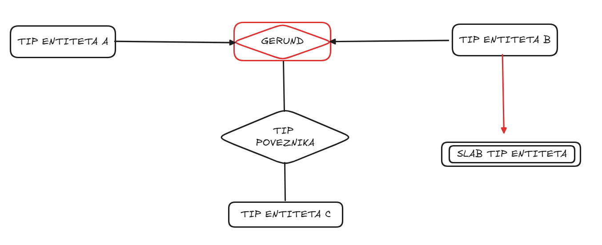

Relacije između entiteta i tipovi poveznika (1:1, 1:N, N:M)
U prethodnoj lekciji bavili smo se entitetima i atributima i naučili kako se oni prikazuju na ER dijagramu. Sada već znamo kako da opišemo pojedinačne delove sistema i njihove osobine. Međutim, informacioni sistem za školu ne čine samo izolovani tipovi entiteta. Prava vrednost dolazi iz načina na koji su ti tipovi entiteta međusobno povezani. Upravo te veze nazivamo relacije, odnosno poveznici na ER dijagramu.
Uvod kroz pitanje i problem
Relacija predstavlja vezu između dva ili više tipova entiteta. U informacionom sistemu za školu, relacije su veoma prirodne. Učenik pohađa predmet, profesor predaje predmet, a učenik dobija ocenu iz predmeta. Ove veze nam govore kako različiti delovi sistema funkcionišu zajedno.
Na ER dijagramu relacije se prikazuju kao poveznici između tipova entiteta. Međutim, nije dovoljno samo reći da veza postoji. Potrebno je da znamo i kakva je priroda te veze. Da li jedna pojava tipa entiteta može biti povezana sa jednom ili više pojava drugog tipa entiteta? Odgovori na ova pitanja definišu tip relacije.
Osnovni tipovi relacija prema kardinalnosti
Postoje tri osnovna tipa relacija koje smo već uveli: jedan prema jedan (1:1), jedan prema više (1:N) i više prema više (N:M).
Relacija jedan prema jedan (1:1) znači da je jedna pojava jednog tipa entiteta povezana sa najviše jednom pojavom drugog tipa entiteta i obrnuto. U ovim situacijama treba da obratimo pažnju jer ove veze često ukazuju na to da možda imamo suvišne tipove entiteta ili da bi trebalo da ih spojimo. Na primer, ako imamo tip entiteta Student i tip entiteta Indeks, i svaki student ima tačno jedan indeks, a svaki indeks pripada tačno jednom studentu, onda je veza između njih 1:1.
Relacija jedan prema više (1:N) znači da jedna pojava jednog tipa entiteta može biti povezana sa više pojava drugog tipa entiteta, dok svaka od tih pojava pripada samo jednoj pojavi iz prve grupe. Na primer, jedna pojava tipa entiteta Profesor može biti povezana sa više pojava tipa entiteta Predmet, dok svaki predmet pripada jednom profesoru.
Relacija više prema više (N:M) znači da više pojava jednog tipa entiteta može biti povezano sa više pojava drugog tipa entiteta. Na primer, jedna pojava tipa entiteta Učenik može biti povezana sa više pojava tipa entiteta Predmet, a jedna pojava tipa entiteta Predmet može biti povezana sa više pojava tipa entiteta Učenik.
| Tip relacije |
Opis |
Primer iz školskog sistema |
| 1:1 |
Jedna pojava sa jedne strane povezana je sa najviše jednom pojavom sa druge strane |
Student - Indeks |
| 1:N |
Jedna pojava prve strane povezana je sa više pojava druge strane |
Profesor - Predmet |
| N:M |
Više pojava sa obe strane može biti međusobno povezano |
Učenik - Predmet |
Tipovi poveznika na ER dijagramu
Pored podele prema kardinalnosti, relacije možemo posmatrati i kroz različite tipove poveznika na ER dijagramu. Ovi tipovi nam pomažu da preciznije modelujemo različite situacije iz realnog sveta.
Najjednostavniji je osnovni tip poveznika. To je poveznica koja povezuje dva tipa entiteta. Na primer, poveznica između tipa entiteta Profesor i tipa entiteta Predmet predstavlja osnovni tip poveznika jer uključuje dva tipa entiteta.
Postoje i n-arni tipovi poveznika. To su poveznice koje povezuju tri ili više tipova entiteta. Na primer, možemo imati poveznicu koja uključuje tip entiteta Učenik, tip entiteta Predmet i tip entiteta Profesor, ako želimo da zabeležimo ko je predavao određeni predmet određenom učeniku. U ovakvim situacijama nije dovoljno koristiti samo binarne veze, već uvodimo poveznicu koja obuhvata više tipova entiteta istovremeno.
Još jedan važan tip je rekurzivni tip poveznika. To je situacija kada je tip entiteta povezan sam sa sobom. Na primer, u informacionom sistemu za školu možemo imati tip entiteta Profesor, gde jedan profesor može biti mentor drugom profesoru. U ovom slučaju, poveznica povezuje pojave istog tipa entiteta.
Postoji i koncept slabog tipa poveznika, koji se javlja u situacijama kada jedna veza zavisi od postojanja druge. Ovo se obično odnosi na slučajeve kada određeni tip entiteta ne može postojati samostalno bez veze sa drugim tipom entiteta. Na primer, možemo posmatrati ocenu kao nešto što ne može postojati bez učenika i predmeta. U takvim situacijama veza ima poseban značaj jer zavisi od drugih elemenata sistema.
Gerund ili asocijativni entitet
Sada dolazimo do jednog malo složenijeg, ali veoma važnog koncepta. Razmotrimo relaciju između tipa entiteta Učenik i tipa entiteta Predmet. Kao što smo rekli, to je relacija više prema više. Međutim, šta ako želimo da toj vezi dodamo dodatne informacije, na primer datum kada je učenik dobio ocenu ili samu vrednost ocene?
U tom trenutku dolazimo do problema. Relacija sama po sebi ne može jednostavno da sadrži dodatne atribute na način na koji to rade entiteti. Postavlja se pitanje: kako možemo opisati ovu vezu tako da ona ima svoje podatke i da može učestvovati u daljim vezama?
Rešenje ovog problema je uvođenje gerunda, odnosno asocijativnog entiteta. Gerund je posebna vrsta entiteta koja nastaje iz relacije kada želimo da tu relaciju posmatramo kao novi tip entiteta. Na primer, relaciju između tipa entiteta Učenik i tipa entiteta Predmet možemo pretvoriti u novi tip entiteta, na primer Ocena. Taj novi tip entiteta može imati svoje atribute, kao što su vrednost ocene ili datum, i može učestvovati u daljim relacijama.
Na ovaj način rešavamo problem kada relacija nije dovoljno "jednostavna", već nosi dodatne informacije koje želimo da modelujemo. Gerund nam omogućava da relaciju tretiramo kao poseban tip entiteta i time dobijemo veću fleksibilnost u modelovanju.
| Situacija |
Rešenje |
Primer |
| Relacija N:M ima dodatne podatke |
Uvodimo gerund (asocijativni entitet) |
Učenik - Predmet postaje Ocena |
| Veza uključuje tri tipa entiteta |
Koristimo n-arni tip poveznika |
Učenik - Predmet - Profesor |
| Tip entiteta povezan sa samim sobom |
Koristimo rekurzivni poveznik |
Profesor mentoriše profesora |

Na slici je dat primer različitih tipova poveznika u ER dijagramu. Gerund (tip poveznika koji postaje entitet) nastaje od tipova entiteta A i B i prikazuje kako relacija može postati novi tip entiteta i dalje se koristi u modelovanju. Takođe, tad je primer slabog tipa entiteta koji je zavistan od B.
Podsticanje razmišljanja
Šta bi se desilo ako bismo svaku relaciju posmatrali samo kao jednostavnu vezu između dva tipa entiteta?
Kako bismo ovo rešili kada relacija ima svoje atribute, kao što su datum i vrednost ocene?
Da li u tvom modelu postoji neka veza koja zapravo treba da postane novi tip entiteta?
Učenici često prave grešku tako što pokušavaju da sve relacije posmatraju kao jednostavne veze između dva tipa entiteta. Međutim, u složenijim sistemima često je potrebno koristiti različite tipove poveznika kako bi model bio tačan i potpun.
Ako ti je teško da razumeš kada treba koristiti koji tip poveznika, pokušaj da razmisliš o prirodi problema koji rešavaš. Da li povezuješ dva ili više tipova entiteta? Da li tip entiteta može biti povezan sam sa sobom? Da li relacija ima svoje atribute? Odgovori na ova pitanja pomoći će ti da izabereš odgovarajući pristup.
Zaključak
Razumevanje tipova poveznika je važno jer nam omogućava da precizno modelujemo realne sisteme i da izbegnemo probleme u kasnijim fazama razvoja baze podataka.
Za informacioni sistem za školu:
* navedi jedan primer osnovnog tipa poveznika
* navedi jedan primer n-arnog tipa poveznika
* navedi jedan primer rekurzivnog tipa poveznika
* objasni situaciju u kojoj bi koristio gerund i koji bi tip entiteta tada uveo
Pokušaj da za svaki primer objasniš zašto pripada baš tom tipu poveznika.